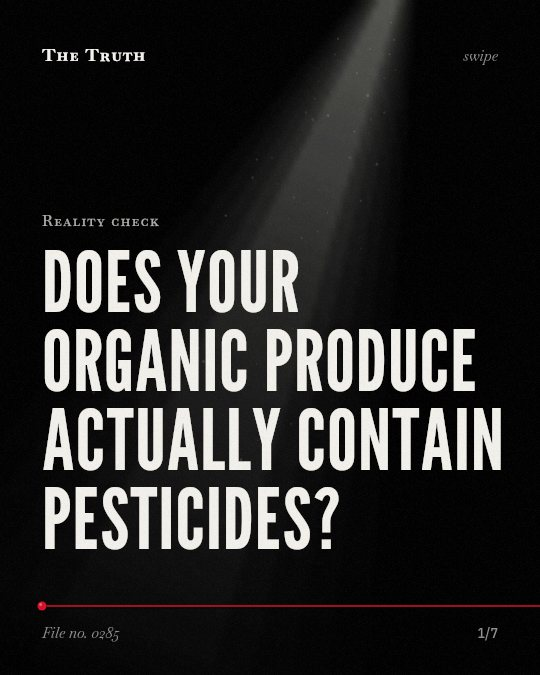

Reality check
Does your organic produce actually contain pesticides?

Organic produce still contains pesticide residues.
While organic farming reduces concentrations, it does not eliminate them. Some residues were detected in organic wines that are not allowed in this production method.
Supported. At least one solid peer-reviewed study. The evidence goes against the popular idea.
What the research found
Some pesticide residues in organic wines were detected, which are not allowed in this type of production.
“It is unacceptable that some pesticide residues in organic wines were detected, which are not allowed in this type of production.”
Study, 2021. Čuš et al., Food Control.
Over 60% of the evaluated samples of dairy cattle diets contained mixtures of two to six residues per sample.
“Over 60% of the evaluated samples contained mixtures of two to six residues/sample.”
Study, 2022. Penagos-Tabares et al., Environmental Pollution.
Conventional wines had an average pesticide concentration of 8.2 µg/kg, while organic wines averaged 0.25 µg/kg.
“Conventional wines presented a considerably higher average concentration than organic wines (8. 2 against 0. 25 µg/kg).”
Study, 2022. González et al., Journal of Food Composition and Analysis.
Organic soils had a 68.19% lower residue concentration than conventional soils.
“In turn, concentrations in conventional soils averaged 8. 7 against 2. 8 µg/kg in organic soils, a 68. 19 % lower residue concentration.”
Study, 2022. González et al., Journal of Food Composition and Analysis.
Pesticide residues were detected significantly more frequently in conventional flour samples (87%) than organic flour samples (25%).
“Pesticide residues were detected significantly more frequently in conventional (87%) than organic (25%) flour samples.”
Observational study, 2020. Wang et al., Food Chemistry X.
Total concentrations of pesticide residues were ~4 times higher in conventional than organic wheat flour.
“Total concentrations of pesticide residues were (a) ~4 times higher in conventional than organic”
Observational study, 2020. Wang et al., Food Chemistry X.
Organic methods are less intense but not clean.
Organic soils have 68.19% lower residue concentrations than conventional soils. However, residues appear in organic wines and dairy cattle diets. Current methods may not reliably estimate the full presence of these chemicals.
The label is not a guarantee of purity.
That may be why the organic label feels like a safety net. The evidence shows that chemical traces persist in organic systems despite the intended protections.
This part is our reading of the evidence, not a finding.
The morning routine.
You pour a glass of organic wine or spread organic bread on your toast. You assume the chemicals have been removed from your food entirely.
The honest summary
The evidence shows that organic farming typically reduces pesticide concentrations compared to conventional methods, though it does not eliminate them entirely.
The studies highlight that current calculation methods may not reliably estimate pesticide presence and that the 'cocktail effect' of co-occurring chemicals requires further investigation.
What else are you assuming is pure?
Sources
- Felipe Penagos-Tabares, Michael Sulyok, Johannes Faas et al. (2022). Residues of pesticides and veterinary drugs in diets of dairy cattle from conventional and organic farms in Austria. Environmental Pollution. Study, cited 57 times.
- Pablo Alonso González, Eva Parga‐Dans, Andrea Carolina Acosta-Dacal et al. (2022). Differences in the levels of sulphites and pesticide residues in soils and wines and under organic and conventional production methods. Journal of Food Composition and Analysis. Study, cited 41 times.
- Franc Čuš, Helena Baša Česnik, Špela Velikonja Bolta (2021). Pesticide residues, copper and biogenic amines in conventional and organic wines. Food Control. Study, cited 40 times.
- Juan Wang, Gultakin Hasanaliyeva, Liza Wood et al. (2020). Effect of wheat species (Triticum aestivum vs T. spelta), farming system (organic vs conventional) and flour type (wholegrain vs white) on composition of wheat flour – Results of a retail survey in the UK and Germany – 3. Pesticide residue content. Food Chemistry X. Observational study, cited 27 times.
Also read for this file, not quoted
This file was researched and drafted by software, then checked by rules a model cannot talk its way around: each quote above was matched word for word against the paper, and every number had to appear in it. How files are made.